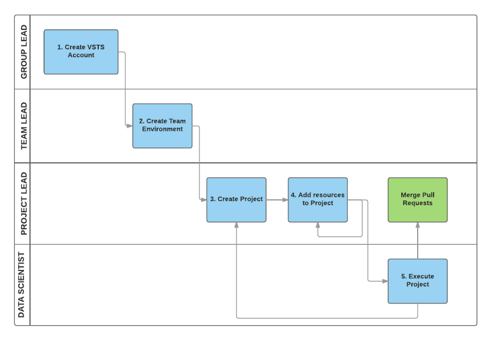

Team Data Science Process Tutorial
This set of tutorials provide instructions on how to set up Team Data Science Process (TDSP) environment for different personnel in an enterprise.
Please choose the corresponding tutorial based on your role in your organization.
Definition of four different personnel
-
Group Manager. Group manager is defined as the lead of a data science unit in an enterprise. Such a data science unit might have multiple data science teams, each of which is working on multiple data science projects in a certain business area.
-
Team Lead. A team lead is leading a team in the data science unit of an enterprise. A team consists of multiple data scientists.
-
Project Lead. A project lead is leading the daily activities of one or multiple individual data scientists on a specific data science project.
-
Project Individual Contributor. A project individual contributor is a data scientist who is actually carrying out the data science project.
Summarization of tasks to be completed by four personnel
The following picture depicts the roles of the four personnel in adopting TDSP from Microsoft, and their tasks in general.

Group Manager. The group manager, or his/her designated TDSP system administrator, will complete the following tasks in order to adopt TDSP:
- Create a visual studo team services (VSTS) server for the group
- Create the GroupCommon project template repository, and seed it from the project template repository developed by Microsoft TDSP team. The TDSP project template repository from Microsoft provides a standardized directory structure including directories for data, code, and documents, and provides a set of standardized document templates to guide an efficient data science process.
- Create the GroupCommon utility repository, and seed it from the utility repository developed by Microsoft TDSP team. The TDSP utility repository from Microsoft provides a set of useful utilities to make the work of a data scientist more efficient, including utilities for interactive data exploration and analysis, automatic featurization, and baseline modeling and reporting.
- Set up the security control of the VSTS server.
Click Group Manager for detailed step-by-step instructions.
Team Lead. The team lead, or his/her designated team project administrator, will complete the following tasks in order to adopt TDSP:
- Create a team project on the group's VSTS server
- Create the Team project template repository under the team project, and seed it from the GroupCommon project template repository set up by your group manager or his delegates.
- Create the Team utility repository, and add the team specific utilities to the repository.
- Create Azure file shares to be used to store data assets that can be useful for the entire team.
- Mount the Azure file shares to his/her Data Science Virtual Machine (DSVM), and add data assets on it.
- Set up the security control by adding team members and configure their preveliges.
Click Team Lead for detailed step-by-step instructions.
Project Lead. The project lead will complete the following tasks in order to adopt TDSP:
- Create a project repository under the team project, and seed it from the Team project template repository.
- Create Azure file shares to be used to store data assets of the project.
- Mount the Azure file shares to his/her Data Science Virtual Machine (DSVM), and add data assets on it.
- Set up the security control by adding project members and configure their preveliges.
Click Project Lead for detailed step-by-step instructions.
Project Individual Contributor. The project ICs will complete the following tasks in order to conduct the data science project by following the team data science process from Microsoft.
- Create a project repository under the team project, and seed it from the Team project template repository.
- Create Azure file shares to be used to store data assets of the project.
- Mount the Azure file shares to his/her Data Science Virtual Machine (DSVM), and add data assets on it.
- Set up the security control by adding project members and configure their preveliges.
Click Project Individual Contributors for detailed step-by-step instructions.